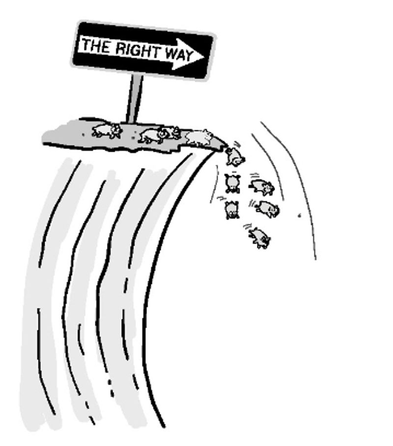
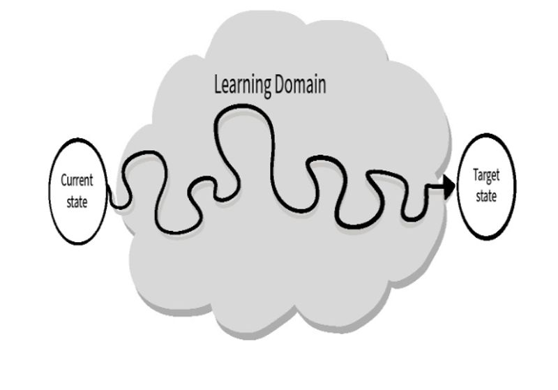

Обучение
Обучение не является обязательным… как и выживание.
— У. Эдвардс Деминг.
В 2006 году гуру промышленного дизайна Питер Скиллман выступил на TED-конференции, рассказав о неожиданных открытиях, которые он сделал в своих экспериментах по дизайну и обучению. В одном из них он предложил людям в командах работать в течение 18 минут, используя только спагетти, зефир, скотч и шнур, для постройки самой высокой конструкции. Удивительно, но он обнаружил, что дети дошкольного возраста постоянно показывали лучшие результаты, чем все остальные. Еще более интересно, что выпускники бизнес-школ, почему-то, всегда показывали наихудшие результаты.
В чем же причина этого?
Секрет заключается в различном подходе к решению задачи. Взрослые начинают с организации себя по ролям и разработки плана действий. Мы делаем это, потому что нас учили традиционным системам образования и управления бизнесом, которые научили нас разбивать задачи на части, соответствующие централизованному плану. Четкое определение ролей и назначение задач для каждого человека кажется более организованным и эффективным. Структурированный подход хорошо сочетается с большинством идеалов управления, возникших во времена массового производства, когда задачи были известны, а в работе было небольшое количество вариаций. Его проблемы становятся более очевидными при попытке решения новых задач, будь то построение башни из продуктов или оказание сложных ИТ-услуг. Он игнорирует тот факт, что мы редко знаем достаточно о проблеме, которую пытаемся решить, и экосистеме, в которой она существует, чтобы построить рабочий план и оптимизировать работу заранее. Не только все время и усилия, затраченные на организацию и оптимизацию, являются пустой тратой, но они также могут замедлить прогресс из-за ненужной фрагментации, ошибок и переделок. Худшее из всего — это также мешает нашей способности учиться и адаптироваться.
Дети дошкольного возраста не имеют этих проблем по простой причине — они еще ничего не учили. Вместо этого они сразу бросаются к цели, а не к плану. В отличие от взрослых, они не ограничены «правильным» способом выполнения задач. Они просто пробуют различные подходы и быстро узнают, что работает и что нет. Без плана или «святых коров» на пути, они могут быстрее отбросить тупиковые идеи и включить общие открытия. Благодаря этому они коллективно оттачивают и совершенствуют полученные знания, а затем применяют их более эффективно, чем это могут сделать их разрозненные взрослые. Это приводит к созданию структур, которые не только более креативны, но и лучше, чем те, которые создаются взрослыми. Избавиться от этих укоренившихся привычек чрезвычайно трудно. Они так глубоко вживлены, что путь к восстановлению кажется не интуитивным, если не ошибочным. Чтобы понять, почему они возникли, лучше всего начать с понимания их, казалось бы, безобидного происхождения. Только тогда мы снова сможем научиться учиться.
Появление обучения для достижения навыков
Рисунок 7.1 Рост государственного образования.
У нас с рождения есть врожденная способность к обучению. Мы смотрим, прикасаемся, пробуем на вкус, слушаем и пробуем различные вещи, чтобы понять свойства окружающего нас мира и то, как предметы ведут себя в нем. Однако проблема обучения заключается в том, что без структуры оно может привести к интеллектуальному разрыву и бесцельному блужданию, что может замедлить процесс совершенствования и привести к несогласованности умений и знаний в команде и людей в целом.
Чтобы привнести последовательность и структурированность в процесс обучения, педагогам с 19 века по сегодняшний день рекомендуется развивать и оттачивать образовательная модель, ориентированная на формирование набора знаний и навыков, которые, подобно набору инструментов, могут быть использованы для решения данной проблемы. Затем учащиеся демонстрировали то, чему они научились, с помощью серии поэтапных оценок.
Эта модель оказалась привлекательной как для правительств, так и для работодателей. Правительства могут гарантировать наличие у граждан основных навыков грамотности и математики, необходимых для мастеров и профессионалов на всех уровнях, а также развить чувство общности и гражданской ответственности через уроки обществознания и истории. Работодатели получают доступ к квалифицированной рабочей силе, которая, вероятно, потребует меньше обучения и будет более продуктивна в ближайшее время.
Иметь полезный набор навыков несомненно хорошо. Трудно представить, как можно работать в качестве разработчика или администратор баз данных без предварительных знаний по данной теме. Однако определение уровня владения конкретным навыком может быть сложно, если механизмы, используемые для оценки этих навыков, варьируются от преподавателя к преподавателю. Хотя отдельные оценки могут помочь учителю найти недостатки у отдельных учеников, они не предоставляют много информации о том, насколько хорошо ученик справляется со своими сверстниками в других классах или школах. Это отсутствие понимания затрудняет работодателям быстро оценить подходит ли кандидат на работу, и мешает правительственным чиновникам иметь хороший способ оценки эффективности школ и преподавателей.
Для решения этой проблемы организации, начиная от школ и университетов, а также власти, которые их поддерживают, и заканчивая бизнесами, желающими знать навыки потенциальных сотрудников, обратились к тому, чтобы студенты проходили стандартизированные тесты. Хотя идея звучит хорошо, именно здесь начинаются плохие привычки.
Становление единственно правильного пути

Рисунок 7.2 Некоторые настаивают на том, что есть только один правильный путь, независимо от последствий.
Первой проблемой, которую вызвали стандартизированные тесты, было создание самих тестов. Оценить уровень знаний человека сложно, если на вопросы отвечают совершенно по-разному. Чтобы упростить проверку и ограничить дискуссии, тесты намеренно ограничивают количество ответов и подходов, считающихся приемлемыми для получения максимального балла.
Это решение имело несколько непреднамеренных последствий. Первое из них заключается в том, что это стимулирует преподавателей «преподавать тест». Зная, что их профессиональный успех будет оценен по результатам тестов своих учеников, у них мало стимулов допустить что-то, что не соответствует узкому набору приемлемых ответов и подходов.
При подготовке к тестированию предпочтение отдается описанию конкретных приемов тестирования, а не обеспечению четкого понимания преподаваемого предмета. Даже при преподавании предмета, педагоги могут ограничить себя в преподавании определенных методов, которые могут быть менее подходящими для помощи ученикам понять ключевые концепции, всё ради того, чтобы ученики соответствовали предпочтительным методам тестирования. Это может не только вызвать у учащихся трудности, но и привести к пренебрежению развитием понимания лежащих в основе концепций, учащиеся могут начать находить тему и, в конечном счете, школьное обучение станет бессмысленными и ненужным.
Другим следствием обучения тестированию является то, что учащиеся прививаются верить в то, что существует только один правильный подход ко всему и что следование ему всегда приведет к успеху. то побуждает следовать правилам, а не внедрять инновации, направленные на улучшение статус-кво. Люди становятся обученными использовать любые «лучшие практики», инструменты и технологии, которые им было сказано использовать, вместо того, чтобы находить те, которые в их экосистеме более эффективны для достижения желаемого результата. Многие даже идут настолько далеко, что не позволяют другим искать улучшения, исключительно на том основании, что они не являются «стандартом» или «лучшей практикой». Это часто приводит к тому, что процессы и технологии длительного хранения выходят далеко за рамки своей полезности.
Возможно, самым обеспокоенным аспектом всего этого является то, что это поощряет людей сосредоточиться на выполнении задач и оценке того, насколько хорошо они выполнили свою работу, а не на том, внесли ли их усилия вклад в достижение желаемого результата. Это ограничивает объем того, что на самом деле можно изучить и улучшить, так как неудача может произойти так же легко при выборе неправильной задачи для выполнения, как и при плохом выполнении правильной задачи.
Чтобы исправить это пристрастие, организациям необходимо изменить фокус обучения и улучшения, сосредоточившись на целевом желаемом результате, а не на задачах и других локализованных мерах.
Институционализированное не обучение
Одна из вещей, которая раздражает меня больше всего, — это процессы проверки, которые не обеспечивают обучения и совершенствования. Я регулярно сталкиваюсь с командами, которые внедрили ретроспективы Agile, процессы постоянного улучшения сервиса ITIL, обзоры проектов после внедрения или вскрытие инцидентов. Многие из этих процессов обзора приводят к выявлению полезных проблем, иногда даже с рекомендациями для дальнейшего исследования каждой проблемы, предложенными шагами для предотвращения возникновения проблемы в будущем и другими «уроками», извлеченными из опыта.
Однако, хотя по результатам обычно составляются заметки или документы, они часто откладываются в долгий ящик и игнорируются вместе с любыми реальными действиями по улучшению.
Такие процессы одновременно угнетают и являются пустой тратой времени. Но что интересно, так это то, что многие команды, с которыми я сталкиваюсь, чувствуют себя скорее виноватыми в том, что не выполняют их регулярно, как предписано, чем обеспокоенными тем, что они не могут совершенствоваться.
Я твердо верю, что процессы, которые не служат по назначению, должны быть проанализированы и либо исправлены, либо заменены теми, которые служат по назначению, поскольку именно это важна цель, а не сам процесс. Тем не менее, когда я заставляю команды делать это, почти всегда возникает смесь скептицизма и веры в то, что технологическая полиция собирается их отчитать. Облегчение наступает только после того, как улучшения сделаны и им позволено закрепиться.
Обучение, ориентированное на конечный результат
Другим подходом является то, что я называю направленным на результат обучением. Идея заключается в том, что обучение направлено на достижение желаемого результата или заданных условий, при этом учащийся исследует и экспериментирует, чтобы накопить знания и навыки, необходимые для достижения целевого результата. Этот подход является основой процессов непрерывного улучшения, таких как бережливое производство. Хотя практики редко полностью отказываются от обучения новым навыкам, акцент на результате переносит фокус внимания с индивидуальных действий на цель деятельности.
Для эффективной работы этого подхода необходимо иметь несколько важных элементов. Во-первых, недостаточно просто сформулировать желаемый результат. Учащийся также должен знать, почему этот результат или условие желательны. Это не только дает цель получения результата, но также может дать некоторые подсказки для наилучшего выбора мер, которые позволят понять, движетесь ли вы к правильному результату.
Следующий важный элемент — это то, чтобы учащийся имел хорошее представление о текущем состоянии. Текущее состояние — это точка отсчета, от которой вы в конечном счете будете отталкиваться, чтобы определить, были ли предприняты какие-либо действия, приобретены знания, или приобретенные навыки сокращают разрыв в достижении результата. Хотя для начала вам не нужно обладать исчерпывающими знаниями о текущем состоянии, вы обнаружите, что на этом пути вам необходимо получить достаточно подробностей, чтобы определить размер разрыва между тем, где вы находитесь, и тем, где вам нужно быть, чтобы успешно его преодолеть.
При направленном на результат обучении разрыв между текущим состоянием и целевым результатом является местом, где происходит обучение и улучшение. Для устранения этого разрыва требуется ряд исследовательских, экспериментальных и (что важно) аналитических шагов находить, совершать и определять, приводят ли ваши действия к прогрессу в правильном направлении. Как показано на рисунке 7.1, прогресс может быть быстрым, но не всегда линейным. Важно то, что вы учитесь с каждым сделанным шагом

Рисунок 7.3 Типичный нелинейный путь доставки, полный ошибок.
Преимуществом этого подхода является то, что его можно использовать для создания новых продуктов и функций, а также для устранения проблем и оптимизации поставок и операций. Чтобы увидеть, как это может работать на практике, давайте быстро рассмотрим распространенный пример необходимости обеспечения непрерывной доставки.
В традиционной модели, скорее всего, был бы архитектор или инженер-менеджер, у которого была бы одна группа для автоматической сборки и настройки интеграции, другая группа для автоматического тестирования, еще одна для настройки среды и управления ею и, возможно, четвертая группа для автоматизации развертывания и оркестровка. Каждая команда думала о том, как исполнить свою пьесу, время от времени общаясь с другими командами, чтобы помочь им в целом подогнать ее. Однако при отсутствии реального общего понимания результата или того, чем он отличается от текущего состояния, вся инициатива будет зависеть от усилий отдельного менеджера или архитектора по обеспечению достижения результата. Это очень маловероятно. Автоматизированные тесты могут быть недостаточно сфокусированными или всеобъемлющими, может быть упущено некоторое управление средой, крайние случаи оркестровки могут отсутствовать следует учитывать, и даже порядок сборки и упаковка могут быть недостаточно продуманы. На самом деле, такой подход, скорее всего, будет работать лишь незначительно лучше, чем слепое внедрение готового средства непрерывной доставки.
К сожалению, я регулярно сталкиваюсь с командами, которые пошли именно по этому пути. Это отсутствие общего результата неизбежно приводит к хрупкости конвейеров, сомнительному качеству кода и сервиса, а авторитетные знания о состоянии и конфигурации сред настолько низки, что кому-либо трудно уловить или даже понять последствия несоответствий внутри сред и между ними, которые могут вызвать проблемы с качеством обслуживания.
Использование подхода, ориентированного на достижение конечного результата, позволяет решить проблему, указав целевой результат и объяснив, почему он желателен. Это все еще может быть вызвано архитектор или менеджер, но подход был бы выполнен в стиле командования миссией с изложением намерения и причин, стоящих за ним. Это позволяет тем, кто выполняет работу, задавать вопросы и изучать некоторые идеи, чтобы лучше понять цель и факторы, которые важно измерить для оценки прогресса в ее достижении. Например, организация может захотеть улучшить качество предоставления услуг, если у нее слишком высокий уровень неудачных развертываний и доработок или слишком много сложностей при продвижении сборок в процессе предоставления.
Затем команды посмотрят на то, что существует в настоящее время, чтобы понять, что происходит. Является ли система сборки ручной или она дает непредсказуемые результаты? Существуют ли пробелы в охвате автоматизированного тестирования или инструменты тестирования слишком сложны для автоматического запуска? Чего не хватает для того, чтобы управление окружающей средой было полностью автоматизированным и авторитетным? Насколько автоматизирован и воспроизводим процесс развертывания и настройки? Какие еще существуют точки риска, которые могут вызвать проблемы на этом пути?
Любые пробелы затем становятся целевыми областями для экспериментов, предложений и, в конечном счете, предлагайте решения для улучшения. По пути люди открывают для себя новые проблемы и решения, которые они используют сами и делятся ими с другими в путешествии. Поскольку результат является общим, гораздо меньше опасности того, что локальные улучшения, которые мешают остальной части организации достичь его, будут терпимы, а тем более рассматриваться как выигрыш для тех, кто их внедряет.
Создание культуры обучения
Хотя изменение подхода к обучению и совершенствованию у вас и вашей организации может иметь большое значение, поддержание его эффективности с течением времени все еще может быть немного сложной задачей. Люди становятся занятыми, отвыкают от стремления учиться и совершенствоваться и, как правило, начинают принимать статус-кво как неизбежное.
Бережливое производство решает эту проблему, создавая kata, или структуру регулярной практики, вокруг обучение и совершенствование. Идея заключается в том, что регулярная практика может сделать обучение и совершенствование постоянной и естественной частью вашей повседневной жизни.
При попытке сделать обучение и совершенствование непрерывным занятием в вашей команде следует учитывать три аспекта: повседневную практику; то, как вы структурируете мероприятия по улучшению и решению проблем, проводимые в рамках более глубоких ретроспектив и стратегических обзоров; и коучинг для руководства, направляющий и обучающий людей подходу к обучению и совершенствованию. улучшение в целом. Давайте быстро рассмотрим каждый из них, чтобы лучше понять.
Повседневная Kata
Первая часть kata бережливого обучения — это анализ задач, которые вы выполняете каждый день, чтобы понять, можете ли вы внести какие-либо изменения, которые улучшат вашу способность достигать намеченного результата. Идея улучшения ваших методов работы исходит непосредственно из подхода к обучению методам работы в промышленности (представленного в главе 4, «Сложности»). Формирование культуры, которая побуждает всех членов команды регулярно искать способы улучшить повседневную работу, означает, что всем комфортно бросать вызов существующему положению вещей. Как руководитель группы, я добиваюсь этого, постоянно требуя от сотрудников поиска даже небольших улучшений, которые могут снизить нагрузку на них и уменьшить количество ошибок и переделок. Ниже приведены некоторые из вопросов, которые я им задаю:
- Можно ли добиться более простого или элегантного решения с небольшим изменением вашего подхода? Если вы думаете, что это возможно, попробуйте и поделитесь тем, что вы нашли.
- Можно ли автоматизировать ручную работу без кодирования на английском языке? Попробуйте быстро взломать что-нибудь вместе и поделитесь этим со своими коллегами, или, если это может потребовать больше усилий, поговорите с командой разработчиков Инструменты & Автоматизация, чтобы понять, имеет ли смысл это делать.
- Могут ли небольшие изменения в способе инструментирования сервиса или сбора данных повысить осведомленность о ситуации для вас или вашей команды, чтобы вы могли более эффективно предоставлять услуги и эксплуатировать их? Протестируйте это и посмотрите, поможет ли это.
Одним из ключевых аспектов обеспечения этой работы является то, чтобы улучшения приносили пользу и членам команды, которые их разрабатывают. Если кто-то придумает способ сократить свою рабочую нагрузку на 30 процентов, то предоставление ему гораздо большего объема работы взамен принесет мало пользы. Один из способов, которым я справляюсь с этим, — это предоставить им больше времени или гибкости для того, чтобы заняться другим улучшением, которое их действительно волнует, или изучить другую область, которая взаимно интересна им и будущему команды. Это делает работу гораздо более мотивирующей.
Совершенствование Kata и решение проблем
Не все улучшения настолько малы или очевидны, чтобы их мог найти и обработать один человек в своей повседневной работе. Иногда спрос на улучшения может даже возникать в связи с растущими потребностями клиентов или руководства. Каким бы ни был их источник, достижение прогресса в решении этих более масштабных задач требует наслоение структуры на подход к обучению, ориентированный на результат.
В бережливом производстве путешествие обычно начинается организованно, либо с регулярного мероприятия по кайдзен (организованное мероприятие, на котором отдельные лица и команды выделяют время, очень похожее на хакатон, чтобы попытаться внести улучшения), либо с более целенаправленной инициативы по решению проблем. В мире DevOps команды могут аналогичным образом использовать ретроспективы или стратегические обзоры, как описано в главе 14, «Циклы и точки синхронизации». Это гарантирует, что такие мероприятия по решению проблем посвящаются достаточно времени с достаточно частыми интервалами, чтобы каждый мог сделать шаг назад и поразмыслить над ситуацией, чтобы понять, что происходит, исправить любые проблемы и извлечь уроки из накопленного опыта.
То, как я структурирую ретроспективы и стратегические обзоры, соответствует подходу к обучению, ориентированному на результат. Представлены и обсуждены проблемы, а также желаемый результат или целевые условия. За этим следует либо обзор текущего состояния, либо соглашение о следующих шагах, прежде чем предлагать улучшения, которые затем выбираются, выполняются, а затем пересматриваются.
Поскольку существует множество этапов, на которых могут возникнуть проблемы, практики бережливого производства используют ряд инструментов для решения проблем, чтобы сохранять концентрацию внимания и добиваться прогресса. Один из них — шаблон формата А3. Я предоставил копию примера шаблона в приложении. Это простой лист бумаги формата А3 (отсюда и название), который очень приблизительно эквивалентен двум страницам письма США, расположенным рядом. Шаблон описывает проблему, текущее состояние, а также целевой результат. Он также включает в себя ряд разделов для документирования дополнительного анализа, предлагаемых решений для проблемы, согласованный план внедрения, а также обзор и последующие действия после его выполнения. Это живой документ и не обязательно одноразовый план. Я видел, как команды перебирают первоначальные варианты и развивают их, пока не достигнут удовлетворительного состояния, постоянно делясь извлеченными на этом пути уроками.
Иногда командам все еще нужна помощь для решения, казалось бы, неразрешимых проблем. Для этого команды могут обратиться за помощью к тренеру.
Практика коучинга
Рисунок 7.4 Тренеры являются важной частью процесса совершенствования.
Менеджеры — далеко не пассивные участники. Они задают цель и направление, чтобы не дать командам устремиться к неважным факторам. Однако членам команды часто требуется нечто большее, чем просто направление. Они часто нуждаются в руководстве, чтобы отказаться от укоренившихся привычек и научиться использовать методы, которые помогут им понять основные проблемы и найти разумные решения. Именно здесь на помощь приходит практика коучинга.
Создание практики коучинга — это большая часть того, что объединяет процесс обучения. Несмотря на то, что менеджеры и руководители групп часто являются наставниками-коучами, они не единственные. Я видел, как в некоторых организациях привлекаются внутренние «тигриные команды» тренеров, а также внешние консультанты, которые могут помочь разрушить нездоровую динамику командования и контроля и направить команды и их лидеров на правильный путь.
Практика коучинга во многом напоминает отношения наставника и подопечного. Наставник-тренер обеспечивает активное руководство для подопечного, чтобы помочь ему преодолеть препятствия и ограничения и поддержать процесс обучения с целью достижения целевого состояния. Намерение состоит в том, чтобы предоставить достаточно рекомендаций, чтобы помочь подопечному сформировать эффективные привычки для поиска, изучения и обучения тому, как найти путь вперед для достижения как целевых результатов, так и любых целевых условий, которые могут способствовать их достижению.
Процесс коучинга начинается аналогично военной директиве, в виде задания, потребности или проблемы. Обычно они возникают у команды в рамках стратегического анализа, при этом тренер может провести некоторую чистку, чтобы убедиться, что общий замысел ясен. Затем подопечный возвращается с коротким предложением, что очень похоже на обратный брифинг. Быть кратким и лаконичным — ключевой момент, поскольку первый раунд — это просто отправная точка. Первый раунд больше похож на интерактивную сессию идей, чтобы дать подопечному достаточно личного понимания целевого результата и/или условия, чтобы сформировать более значимый и действенный набор следующих шагов.
После того, как подопечный составил разумный бэкбриф, он может приступать к процессу обучения. На этом этапе очень важно, чтобы наставник не указывал подопечному, что делать или как действовать, это отвлекает от процесса обучения. Однако наставник может указать подопечному на подходящие инструменты решения проблем бережливого производства, такие как A3, чтобы помочь организовать их подход.
Наставник помогает подопечному структурировать и продвигаться к намеченному результату. Хотя наставник может понимать целевой результат лучше, чем подопечный, и более умело использовать инструменты решения проблем, его задача — помочь другим освоить эти навыки. Помогая другим стать более опытными, организация повышает свою способность к совершенствованию. Это также отличный способ для перспективных подопечных расти и чувствовать свою значимость.
Еще одна важная часть практики коучинга заключается в том, чтобы наставник и подопечный спокойно относились к небольшим ошибкам и промахам на этом пути. Совершение ошибок — это часть процесса обучения. Практика коучинга делает их еще более безопасными. Это большое отличие от традиционного способа, при котором менеджеры оценивают работников на основании того, как они выполняют задание.
Стоит отметить, что подопечных может быть несколько. Я лично предпочитаю и даже поощряю людей работать в небольших неформальных группах. Это особенно полезно на ранних этапах, когда процесс обучения еще только начинается и не успел укорениться. Причина этого заключается в том, что люди склонны больше беспокоиться об организации групповой динамики, чем о реальном обучении. В таких случаях тренер будет работать как индивидуально, так и коллективно с группой, чтобы предотвратить и показать неоптимизацию, вызванную тем, что люди неизбежно впадают в такое поведение.
Резюме
Обучение невероятно важно для того, чтобы помочь нам улучшить процесс принятия решений и повысить эффективность работы. Несмотря на то, что мы рождаемся с врожденной способностью к обучению, структура современного образования заставляет нас перенимать множество плохих привычек, которые вредят ему и сбивают нас с пути.
Формирование культуры обучения, в которой используются элементы обучения, ориентированного на результат, и которая поддерживается выделенным временем, инструментами для решения проблем, сильной практикой наставничества и поощрением руководства к постоянному улучшению существующего положения дел, может сделать работу более полезной как для отдельных сотрудников, так и для менеджеров и руководителей команд.